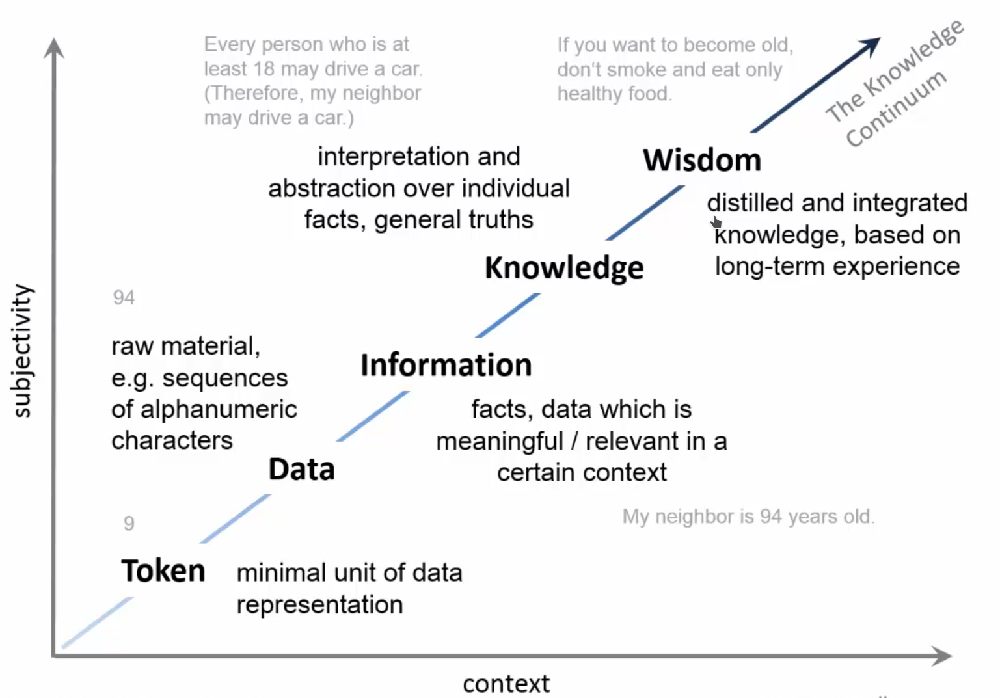
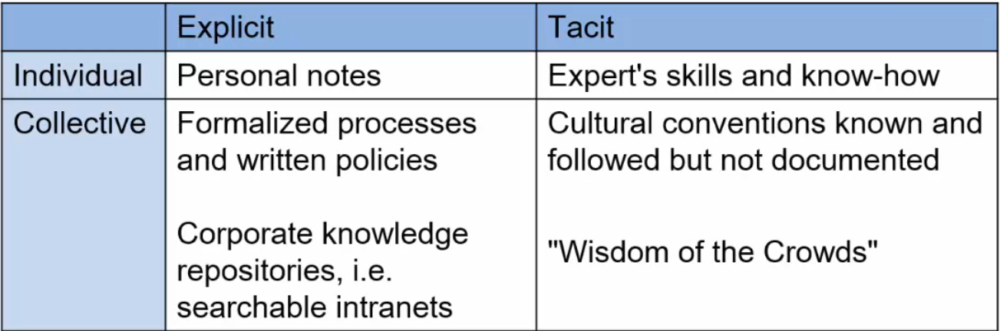
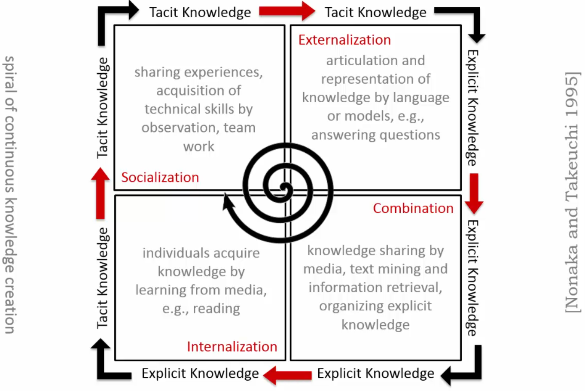

What is knowledge?
Different definitions exist in different fields:
- Comuter science vs. cognitive science
Definition goes in line with how knowledge is treated (modelled, stored, processed).
What is knowledge? - Dictionary definitions
- the fact or condition of knowing something with familiarity gained through experience or
association: acquaintance with or understandig of a science, art, or technique.
- the fact or condition of being aware of something: the range of one's information or
understanding.
What is knowledge? - Dictionary definitions
- the circumstance of condition of apprehending truth or fact through reasoning:
cognition.
- the fact or condition of having information or of being learned.
What is knowledge? - From Tokens to Wisdom

What is knowledge? - Another definition
"Knowledge is a fluid mix of framed experience, values, contextual information, and expert
insight that provide a framework for evaluating and incoporating new experiences and
information."
Information can be transformed into knowledge by:
- Comparision: How does information about this situation compare to other situations we
have known?
- Consequences: What implications does the information have for decisions and actions?
- Connections: How does this bit of knowledge relate to others?
- Conversation: What do other people think about this information?
Data -- Information -- Knowledge
- unstructured
- isolated
- context-independent
- tokens
- objective
- no direct impact on behavior
- structured
- networked
- context-dependent
- cognitive patterns
- subjective
- determines decisions and actions
Types of knowledge I
- Social: competence of acting in a social environment, cooperation, etc.
- Meta-cognitive: knowledge about learning, reasoning, and decision processes and how
to guide them.
- Strategic: heuristics and strategies for solving new types of problems
Types of knowledge II
-
Procedural: Knowledge about possible actions (know-how)
-
Declarative: Knowledge about the world that can be expressed in some language.
-
Domain-specific: declarative and procedural knowledge about the notions and events
relevant for a certain domain.
Tacit vs. explicit knowledge
Tacit (implicit)
- Intangible asset
- Informal and undocumented
- Subconcious, difficult to articulate
- Embedded in minds of people, underlying processes or best practices
- Subject to individual perspective
- Transfer by social interaction or collaboration
Explicit
- Tangible asset
- Formalised or codified
- Can be viewed or heard
- Stored in databases and knowledge repositories
- Can be processed and distributed by computers
- Easy to share and distribute
Exercise
Can you think of examples for these types of knowledge?

Spiral of knowledge creation
